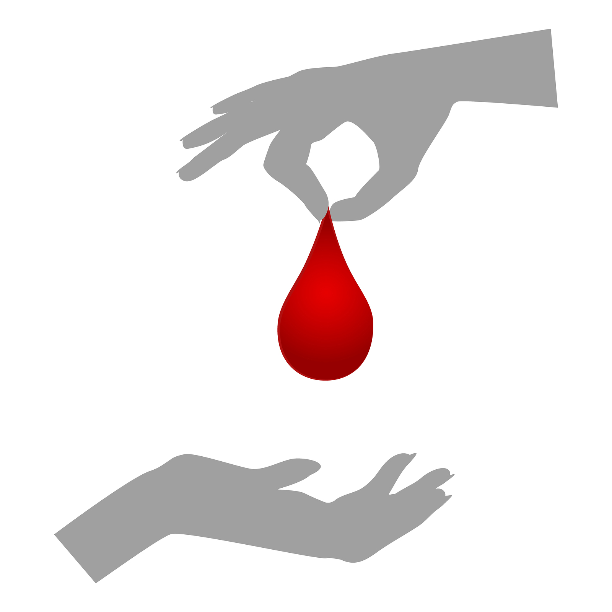

Blood transfusion services have gained significant importance and momentum in view of HIV infection. The efficacy of transmission of HIV through blood and blood products is 100% and screening of the blood for HIV can eliminate this mode of transmission to a large extent.
There are also other diseases which can be transmitted through blood which can be addressed as Transfusion Transmitted Diseases (T.T.D) They are Hepatitis B, Hepatitis C, Malaria, Syphilis.
The ultimate aim of blood banks and transfusion services is to provide safe blood.Blood can be made safe by the following ways:
->Collection of blood from healthy persons absolutely on voluntary donation,
->Adoption of good manufacturing practices: Screening of blood for T D D.using highly sensitive and specific tests,

->Practicing rational use of blood: This needs better emphasis, so that unnecessary transfusion is avoided. A single unit transfusion needs to be stopped, and to encourage use of blood components, Autologous transfusion in cold planned cases.
Blood Banks need to concentrate basically on collection of blood from healthy individuals. This can be done by meticulous selection of donors and by encouraging voluntary donation.
In a historical judgment Supreme Court of India, banned buying and selling of blood with effect from 1st January 98. Hence it is imperative to make available safe blood. As a result voluntary donation of blood should be promoted in the community.
The efforts are in progress to improve the percentage of voluntary blood donation in the State. By the end of December 1998, blood collection by voluntary donation has improved to 46% from 38% in 1997.
To achieve 100% voluntary donation by 2010 A.D. it is necessary to prepare an action plan and make concerted efforts by the health administrators as well as by the community. There is a need for long programming so that voluntary blood donation becomes a public movement and life style of the younger generation.
Thus there is a need for launching an Intensive voluntary blood donation campaign in the state.
The action plan comprises of mass as well as person to person communication to improve the knowledge, attitude and behavioural practices regarding blood donation.
To make voluntary blood donation programme as people’s movement, it is essential to give wide publicity of this activity through all available mass media channels such as Newspapers, T.V, City cable channels, Radio etc. so that the Importance of blood donations, requirement of blood, collection from voluntary donors and transfusion transmitted diseases and the use of safe blood is understood by the people. The messages related to this, should be highlighted in the local languages on Radio, T.V. and through Print media. The celebreties from film, sports, political field and renowned social workers need to be involved to trigger the messages to the community through T.V. spots. These messages be released throughout the year.
(i). SLOGANS ON BLOOD DONATION
This is one of the methods of mass communication. The slogans like "Rakthdaan jeevandaan" ( hindi for give blood, give life) may be displayed or painted on the prominent places in bold red letter with yellow background ( size 1 x 2 meters) The paintings should attract the readers, specially youths.
(ii). DISPLAY OF CINE SLIDES
Still today, a large part of population go to the theaters, especially the younger generation. It is observed that during intermission 50% of the people are present in the hall. The display of cine slides, with triggering messages on blood donation will definitely motivate people for voluntary donation. This can be a routine activity round the year. Special request can be made to the managers for exhibiting the slides before starting the movie for which a letter can be sent from District Collector to the President of the Theaters’ Association.
For the Involvement of prospective donors it is necessary to sensitise High Schools & Jr. College students with the help of High School and College students rallies, marathon and bicycle races can be organised on special days. The cooperation of the sports officers can be sought. Before starting the rallies a lecture on blood donation and its importance can be told to the students. Blood grouping of the students also can be done. The list of participants alongwith their blood group can be retained and used as prospective donors.
Youth forms an important core group. 95% of the blood collected in camps are through college students and hardly 5% of blood collected is used for them. Every college has NSS and NCC units. Regular activities related to voluntary blood donation can be organized through them. They can work as volunteers, organisers and blood donors. Thus they can be real civil soldiers of the Nation.
Handouts covering social & technical details on blood donation, (AIDS, STDs) can be printed and distributed at the time blood donation or blood grouping camps or at the time of other motivational activities. The information in the handouts should be precise and group specific. The distribution of handbills should be done meticulously. It is observed that 40% of the receivers read the message when it is precise and informative.